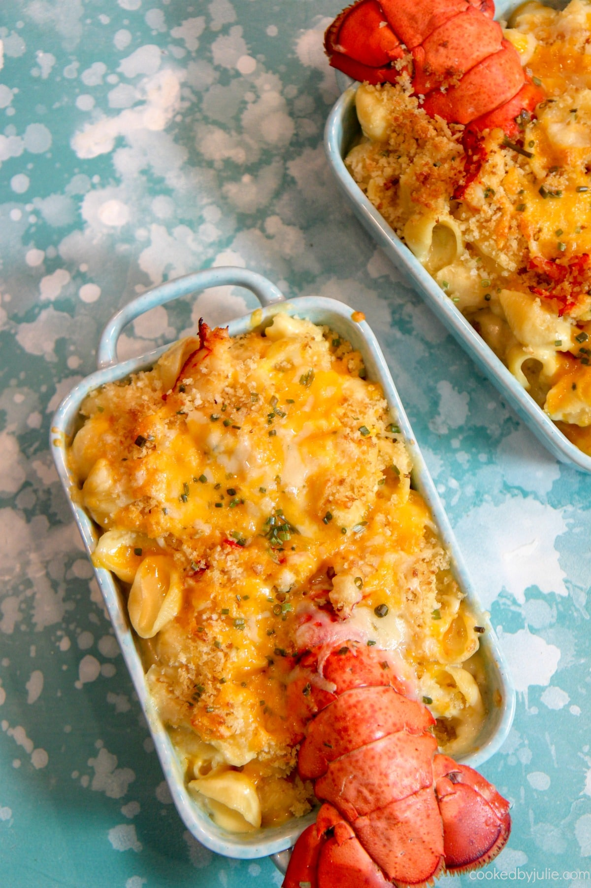

Lobster Mac and Cheese

Description
Lobster is luxurious, delicious and the perfect food for a special occasion. Lobster has a sweeter, less 'fishy' taste than crab, but has a flavour which is rich and satisfying.
It’s ooey and gooey, full of cheese and decadent rich lobster, this truly is an Incredible Lobster Mac and Cheese. Perfect for a special night or occasion, it’s a macaroni and cheese
that’s sure to impress. Lobster is a rich full flavored seafood. Indulgent and flavorful your going to to want to cook lobster more often.
This is not the macaroni and cheese you grew up with. This lobster mac and cheese is an elegant, grown up version that takes mac and cheese to a whole new level.
This seafood mac and cheese is ooey, gooey, cheesy and full of rich melt in your mouth lobster. It’s so insanely delicious. This changes everything when it comes to comfort food.
It’s creamy and savory. Your whole family is going to love this. Make for a special occasion and watch it get devoured.
Ingredients
- 2 teaspoons vegetable oil
- 2 lobster tails, split in half lengthwise and deveined
- 2 tablespoons butter
- 1 ½ tablespoons all-purpose flour
- 1 ½ cups cold milk
- ¼ teaspoon paprika
- 1 pinch ground nutmeg
- 1 pinch cayenne pepper, or to taste
- ½ teaspoon salt, or to taste
- 3 drops Worcestershire sauce, or to taste
- 4 ounces grated sharp white Cheddar cheese
- 1 ounce grated Gruyere cheese
- 1 cup elbow macaroni, or more to taste
- ½ teaspoon fresh thyme leaves
Steps
- Preheat oven to 400 degrees F (200 degrees C). Butter 2 gratin dishes.
- Heat oil in a skillet over high heat. Cook lobster tails in skillet until slightly golden and about halfway cooked-through, about 2 minutes per side.
Transfer tails to a plate to rest. When cool enough to handle, remove lobster meat from shells and chop meat. Reserve shells.
- Melt 2 tablespoons butter in the same skillet over medium heat. Whisk in flour; cook and stir until a paste forms and flour taste cooks off, 1 to 2 minutes.
Add cold milk to flour mixture; whisk until completely incorporated. Bring to a simmer; reduce heat to low, and stir in paprika, nutmeg, and cayenne pepper.
Cook, stirring occasionally, until thick, 3 to 4 minutes. Season sauce with salt.
- Stir Cheddar cheese and Gruyere cheese into milk mixture until cheese is melted. Remove from heat and stir Worcestershire sauce into cheese sauce.
- Bring a large pot of water with reserved lobster tails and a pinch of salt to a boil. Cook elbow macaroni in the boiling water, stirring occasionally,
until cooked through but firm to the bite, about 8 minutes. Remove and discard lobster shells, drain pasta.
- Stir macaroni into cheese sauce with thyme leaves. Divide macaroni mixture between the 2 prepared gratin dishes. Top macaroni with chopped lobster meat, '
poking meat down into macaroni mixture with a fork.
- Stir bread crumbs and melted butter together in a bowl. Add Parmesan cheese and stir. Top each gratin dish with bread crumb mixture.
- Bake in the preheated oven until golden and bubbly, 15 to 20 minutes./li>